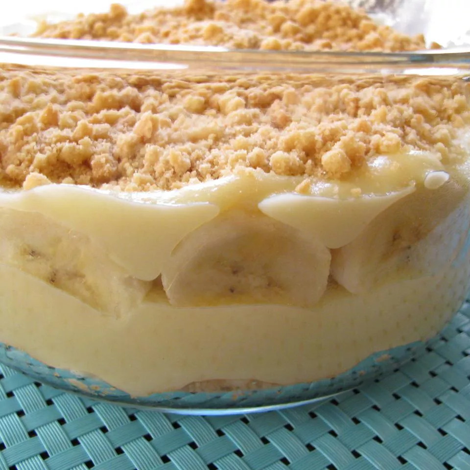

Banana Pudding

Source: https://www.allrecipes.com/recipe/18990/banana-pudding-i/
Ingredients
- ⅔ cup white sugar
- ⅓ cup all-purpose flour
- ¼ teaspoon salt
- 3 eggs, beaten
- 2 cups milk
- 2 tablespoons butter, softened
- ½ teaspoon vanilla extract
- 2 bananas, peeled and sliced
- ½ (12 ounce) package vanilla wafer cookies
Steps
- Combine sugar, flour, and salt together in a medium saucepan. Add eggs and stir well. Stir in milk, and cook over low heat, stirring constantly.
- When the mixture has thickened enough to coat the back of a metal spoon, remove from heat and continue to stir, cooling slightly. Stir in butter and vanilla until smooth.
- Layer pudding with bananas and vanilla wafers in a serving dish. Chill at least 1 hour in the refrigerator before serving.